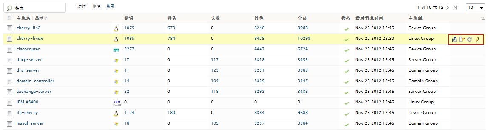
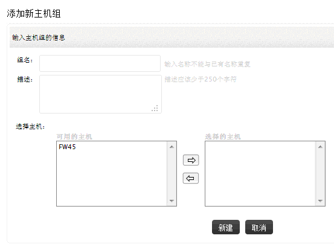
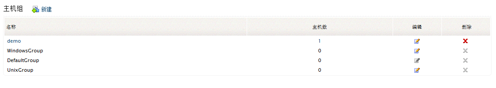

管理主机
在这个部分，您可以管理EventLog Analyzer监视的主机，您可以在这里执行添加、编辑、删除和查看主机操作。
主机
怎样添加一个主机？
要添加主机，请参阅添加主机部分。

怎样编辑一个主机？
编辑/删除菜单将会将您带到所有主机页面，在这里您可以看到所有添加的主机。
- 将鼠标移动到指定主机的行上，将会显示最近10个事件、编辑、立即扫描和启用（如果主机已禁用）菜单图标，点击编辑图标来编辑对应的主机。
怎样删除一个主机？
1a. 选择要删除的主机对应的复选框。
1b. 点击动作菜单中的删除选项删除选择的主机。
怎样禁用、启用一个主机？
1a. 选择主机对应的复选框。
1c. 点击动作菜单中的禁用、启用选项来禁用或启用所选的主机。
其它主机操作
将鼠标移动到指定主机的行上，将会显示最近10个事件、编辑、立即扫描和启用（如果主机已禁用）菜单图标。
-
要查看指定主机的最近的10个事件，点击“显示最近10个事件”图标。
-
点击编辑图标可以编辑指定的主机。
-
要测试主机的连通性，使用“立即扫描”图标。
-
如果主机已禁用，点击“启用”图标，反之，点击“禁用”图标禁用主机。
要搜索一个特定的主机，修改要显示的列。
所有主机
在所有主机页面，您可以查看所有EventLog Analyzer监视的主机，以及它们对应的严重度和事件统计、日志访问状态、上次日志收集时间和主机所在的主机组。
主机组
怎样添加一个主机组？
在用户界面添加一个主机组，可通过以下菜单实现：
- 设置页签 > 配置 > 组：添加
- 设置页签 > 配置 >
所有组 > 添加

-
输入主机组的名称。
-
输入主机组的描述信息。
-
选择主机添加到组。从左侧的可用的主机列表，将主机移动到右侧的选择的主机列表下将主机添加到组，从选择的主机列表移动主机到可用的主机列表将主机从组中移除。
-
点击添加按钮完成主机组的添加操作。

怎样编辑一个主机组？
编辑/删除菜单将会将您带到主机组页面，在这里将会列出所有的主机组。将鼠标放置到指定主机组的行上，你可以看到编辑、删除菜单出现。
点击编辑图标来编辑指定的主机组。
怎样删除一个主机组？
将鼠标放置到指定主机组的行上，你可以看到编辑、删除菜单出现。点击删除图标来删除指定的主机组。
主机组
在主机组明细页面，您可以查看所有EventLog Analyzer的主机组，以及它们对应的主机数量，执行编辑和删除操作。
|